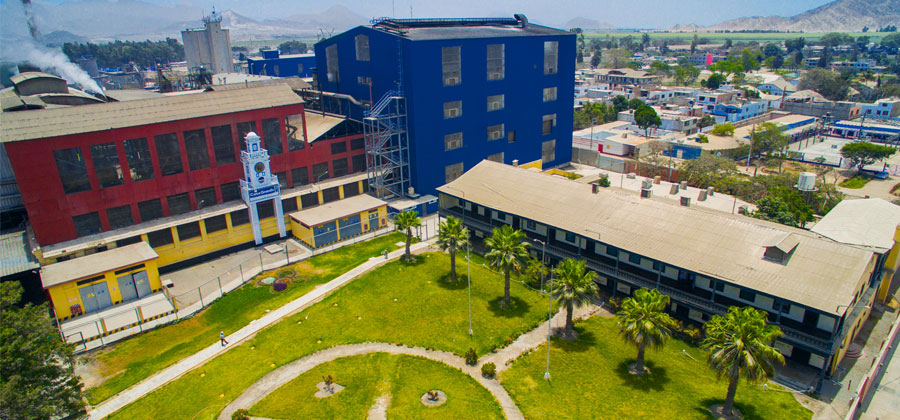
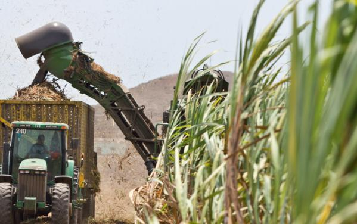
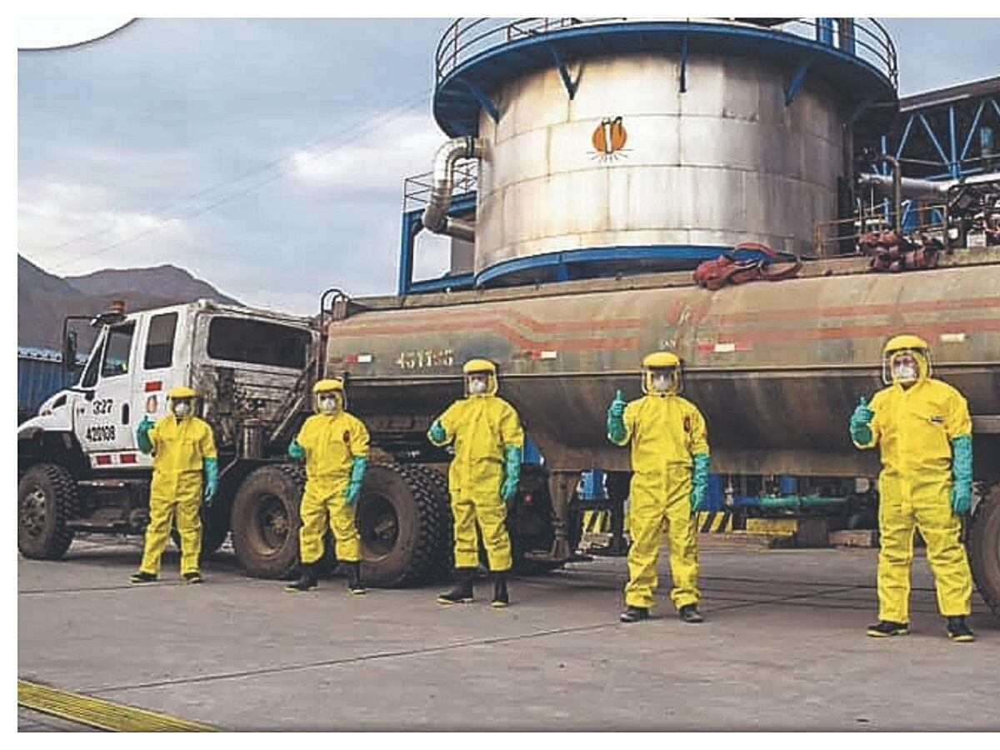
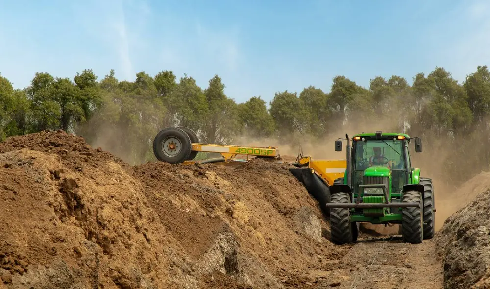

AFINLAB · UNALM
Benchmarking financiero del sector azucarero peruano
Un análisis de 11 años (2014–2025) sobre liquidez, apalancamiento, flujo de caja y creación de valor en cinco empresas azucareras peruanas.
 Cartavio
Cartavio
Casa Grande
Paramonga
San Jacinto
LaredoEn 2014 a esta industria le sobraban S/ 155 millones para financiar su operación. En 2025 le faltan S/ 764 millones.
Fondo de Maniobra y Necesidades Operativas de Fondos del sector sucroenergético, 2015–2025
CVRAB / Utilidad Neta sectorial
Activo biológico corriente / NOF
2017 · El Niño Costero
2023 · El Niño térmico
Lo que un analista habría escrito en 2021
Lo que había detrás
Efectivo sectorial · S/ miles
Deuda financiera de corto plazo contratada en 2021 · S/ 536,000 miles
Flujo de Caja Operativo acumulado 2015–2025 · S/ 3,271,371 miles
Deuda financiera de corto plazo frente a las Necesidades Operativas de Fondos, 2014–2025
Cruce del 100% en 2021: la deuda exigible supera a la necesidad permanente. Cobertura: 43.2% en 2014 → 137.5% en 2025.
Prueba Ácida por empresa, 2025 · dos definiciones
La definición estándar gobierna todo el resto del material. Esta sensibilidad (sin activo biológico) aparece una sola vez. Paramonga y Laredo son No-Coazúcar; Cartavio, San Jacinto y Casa Grande son Coazúcar.
Composición del pasivo sectorial, 2014 frente a 2025
Pasivo operativo y otros se paga con la operación. Deuda financiera (×6.53 entre 2014 y 2025) se paga con caja, en fecha y con intereses, lo diga o no el ciclo del azúcar.
Gastos financieros y su peso sobre el EBIT
2018: 47.6% del EBIT — colapso del denominador, con un gasto de solo S/ 28,941 miles. 2025: 37.7% del EBIT, con un numerador 3.78 veces mayor.
Años de caja operativa necesarios para repagar toda la deuda financiera
Gastos financieros de 2025 = 43.3% del FCO sectorial. Solo se muestran los ejercicios con FCO publicado.
EVA positivo en solo 6 de 12 ejercicios · ROIC agregado entre 1.34% (2018) y 11.89% (2022)
Panel 1 · Rentabilidad y costo del capital
Panel 2 · Creación y destrucción de valor económico
2023: con el 2.º mejor ROIC de la serie (10.96%), el sector apenas cubrió el costo de su capital (EVA +S/ 9,658 miles). Los dos paneles nunca se superponen: la brecha ROIC−WACC no equivale al EVA.
2017 fue un choque físico de oferta; 2025, una reversión de precios de origen global. Lo idéntico no es la causa: es el daño.
Cifras en S/ miles salvo indicación. Todas verificadas contra DATABASE.md.
El tratamiento se asignó en 2021: Laredo no participó del endeudamiento coordinado de S/ 536,000 miles
Advertencias: la asignación no fue aleatoria sino autoselección; es decir, es un cuasi-experimento. Y el daño operativo no fue simétrico: la utilidad operativa de Laredo cayó −35.5% frente a −55.4% del bloque.
El ROIC mide el rendimiento del capital operativo; el D/E mide quién es dueño de ese capital. No es una contradicción.
Paramonga y Laredo acumulan S/ 876,418 miles de destrucción, magnitud que por sí sola explica todo el EVA sectorial negativo. Causas distintas: Laredo, costo de capital; Paramonga, denominador.
Las Memorias 2021 y 2022 atribuyen textualmente el incremento patrimonial de S/ 240,773 y S/ 262,703 miles al «Resultado de la Revaluación de nuestros terrenos agrícolas». Ese excedente —S/ 768,828 miles, el 22.3% del patrimonio sectorial— es lo único que impide que el sector cierre con más deuda que patrimonio: sin él, el D/E sería 111.29%.
Gracias por seguir el análisis
Esta paltaforma web acompaña la exposición en vivo de AFINLAB
Semillero de investigación en finanzas aplicadas.